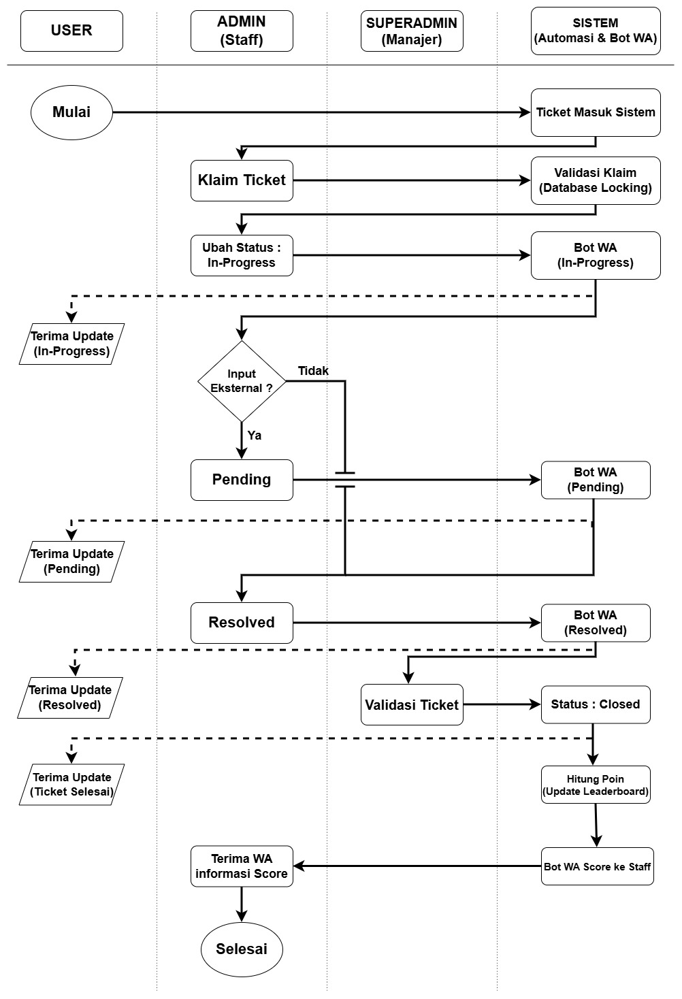
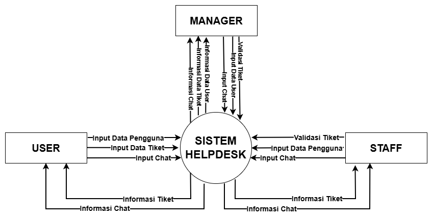
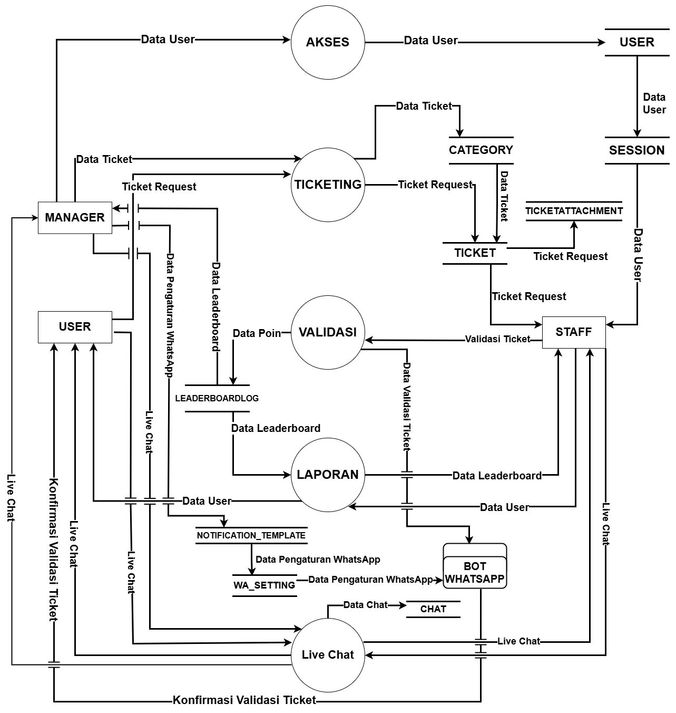
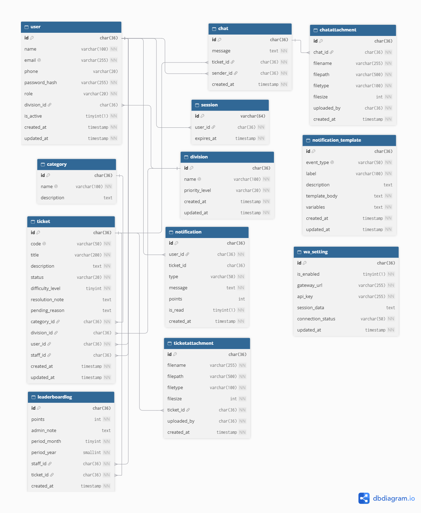

Detail Dokumentasi Proyek
Helpdesk Ticketing IT Support - Overview & Panduan
Dokumentasi dari perancangan sistem manajemen kendala IT digital yang mentransformasikan proses manual menjadi arsitektur aplikasi web terintegrasi, transparan, dan berbasis metrik kinerja.
Repositori ini murni menampilkan dokumentasi perancangan sistem dan analisis bisnis. Seluruh source code, konfigurasi server, serta kunci API tidak disematkan untuk mematuhi kebijakan privasi, hak kekayaan intelektual, serta perjanjian kerahasiaan dengan pihak mitra terkait.
Latar Belakang & Analisis Masalah
- Profil Studi Kasus: Divisi IT Support PT. XYZ Group merupakan studi kasus nyata penanganan operasional teknologi internal yang memerlukan modernisasi alur kerja layanan bantuan (IT Helpdesk).
- Pain Points: Ketiadaan pelacakan & struktur (grup WhatsApp tanpa arsip riwayat), transparansi & monitoring rendah, serta kompleksitas akurasi insentif/KPI manual.
Fitur Utama Sistem
Business Requirement Document (BRD)
Pengembangan Sistem Ticketing IT dilatarbelakangi oleh belum terintegrasinya pelaporan kendala IT yang memicu keterlambatan penanganan, serta belum adanya mekanisme objektif untuk mengukur KPI staff IT Support.
Problem Statement (Identifikasi Masalah)
- Proses Pelaporan Kendala: Pelaporan kendala IT oleh staff masih tidak terstruktur via grup chat WhatsApp, berisiko terlambat ditangani atau tidak terdokumentasi.
- Koordinasi dan Komunikasi: Hambatan komunikasi antara pelapor, tim IT Support, dan Manajer IT karena tidak ada saluran terpusat pada setiap tiket.
- Monitoring & Transparansi KPI: Kesulitan memantau status perbaikan secara real-time serta penilaian kinerja staff IT yang masih kurang objektif.
Project Objectives & Scope
- Tujuan: Platform terpusat pelaporan kendala IT, live chat interaktif, automasi Bot WhatsApp, dan transparansi penilaian KPI objektif.
- In-Scope: Manajemen pengguna berbasis peran (Superadmin, Admin, User), manajemen data master, siklus tiket, live chat, bot WhatsApp, dan pelaporan audit.
Functional & Non-Functional Requirement
Berikut adalah ringkasan spesifikasi kebutuhan fungsional (FR) dan non-fungsional (NFR) sistem:
| ID | Modul / Fitur | Perilaku Sistem |
|---|---|---|
FR-01 |
Autentikasi & Manajemen Pengguna | Validasi login terpusat dan RBAC untuk Superadmin, Admin, dan User, serta manajemen akun. |
FR-02 |
Manajemen Data Master | CRUD data master kategori tiket (beserta bobot kompleksitas), divisi, dan pengguna. |
FR-03 |
Pembuatan & Pengelolaan Tiket | User membuat laporan kendala, divalidasi dan dikelola statusnya oleh Staff IT Support (In-Progress, Pending, Resolved, Closed). |
FR-04 |
Saluran Komunikasi Real-Time | Fitur live chat terpusat pada setiap detail tiket aktif antara Pelapor dan Staff IT Support. |
FR-05 |
Integrasi Notifikasi WhatsApp Bot | Automasi pengiriman pesan via bot WhatsApp setiap ada pembaruan status tiket atau pesan masuk. |
FR-06 |
Perhitungan Poin KPI Otomatis | Sistem otomatis menghitung poin KPI Staff IT Support pada leaderboard berdasarkan kompleksitas tiket. |
FR-07 |
Pelaporan & Log Aktivitas | Rekapitulasi laporan KPI staff IT, log aktivitas tiket, serta riwayat chat untuk audit Manajer IT. |
Pemodelan Sistem & Arsitektur
Dokumen ini memuat perancangan alur kerja, aliran data, serta basis data dari sistem helpdesk ticketing untuk memberikan pemahaman bagi kepentingan tim pengembang.
1. Flowchart Sistem
Diagram alur kerja sistem operasional helpdesk ticketing yang mendefinisikan tahapan penanganan kendala dan pelaporan secara sekuensial.


Klik gambar untuk memperbesar- Pengajuan Tiket Kendala: Pengguna mengajukan tiket baru melalui laman sistem dengan melampirkan keterangan kronologi kendala.
- Klaim & Penanganan Tiket: Staff IT (Admin) melakukan klaim tiket masuk, memperbarui status menjadi In-Progress, Pending, hingga Resolved.
- Validasi & KPI: Superadmin/Manager melakukan validasi akhir tiket teratasi untuk memicu kalkulasi poin otomatis ke Leaderboard.
2. Diagram Konteks
Diagram yang menggambarkan batasan sistem secara makro dengan memetakan interaksi data antara aktor eksternal dan pusat sistem.


Klik gambar untuk memperbesar- Manajer IT (Superadmin): Berperan melakukan monitoring menyeluruh, validasi akhir, serta pengaturan hak akses sistem.
- Staff IT Support (Admin): Mengirimkan validasi penanganan tiket dan input chat, serta memantau progres operasional.
- Staff Divisi lain (User): Mengirimkan data pengguna, tiket, dan chat, serta menerima pembaruan status tiket.
3. Data Flow Diagram (DFD) Level 1
Diagram Alir Data Level 1 memetakan dekomposisi proses operasional utama ke dalam subsistem fungsional yang terhubung dengan penyimpanan data internal.


Klik gambar untuk memperbesar- Proses 1.0 (Akses): Mengelola autentikasi pengguna dan manajemen sesi aktif (user, session).
- Proses 2.0 (Ticketing): Mengelola pengajuan tiket, kategori, serta berkas lampiran (ticket, category, ticketattachment).
- Proses 3.0 (Live Chat & Validasi): Menangani komunikasi dua arah dan verifikasi penyelesaian insiden (chat, leaderboardlog).
- Proses 4.0 (Bot WhatsApp & Laporan): Mengelola otomasi pengiriman pesan berdasarkan konfigurasi templat (wa_setting, notification_template).
4. Relasi Basis Data (ERD)
Perancangan skema basis data relasional yang menghubungkan entitas operasional guna menjamin integritas data sistem helpdesk.


Klik gambar untuk memperbesar| Tabel Utama | Fungsi / Deskripsi Data |
|---|---|
user & division |
Menyimpan informasi profil pengguna, kredensial login, nomor induk, serta pengelompokan divisi. |
ticket & category |
Menyimpan informasi pelaporan kendala, tingkat prioritas, dan relasi kategori kendala. |
chat, ticketattachment & chatattachment |
Menyimpan riwayat komunikasi dua arah beserta berkas lampiran pendukung. |
leaderboardlog |
Mencatat akumulasi perolehan poin KPI dari penyelesaian tiket staff. |
wa_setting & notification_template |
Mengatur konfigurasi integrasi bot WhatsApp dan templat pesan otomatis. |